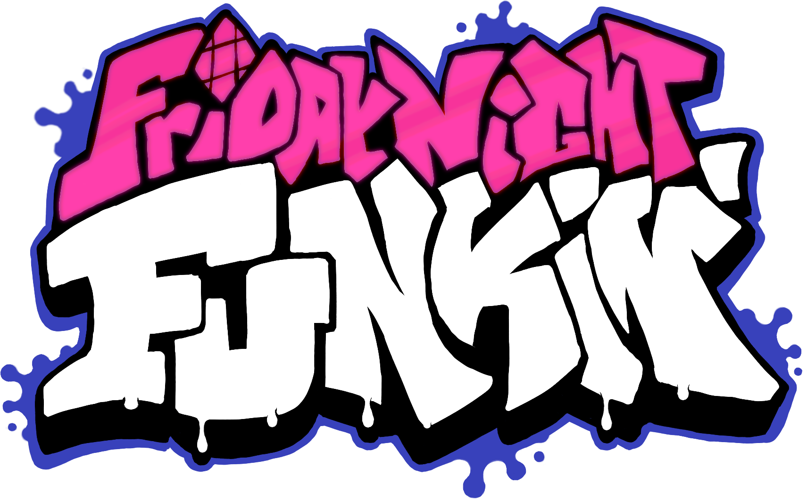
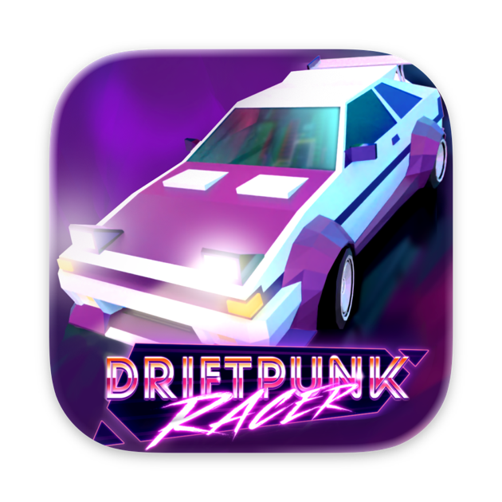

¿Qué es HaxeFlixel?
HaxeFlixel es un motor de desarrollo de videojuegos 2D de código abierto, gratuito y multiplataforma, basado en el lenguaje Haxe y la librería OpenFL. Permite crear juegos una sola vez y compilarlos nativamente para escritorio (Windows, Mac, Linux), móviles (Android, iOS), web (HTML5) y consolas.
¿Qué lenguaje usa?
HaxeFlixel utiliza el lenguaje de programación Haxe, un lenguaje de alto nivel y tipado estricto que se caracteriza por ser de código abierto y multiplataforma. Haxe permite escribir código una vez y compilarlo a múltiples destinos como C++, JavaScript, HashLink o Lua, siendo C++ el más común para juegos nativos.
Juegos creados con HaxeFlixel

